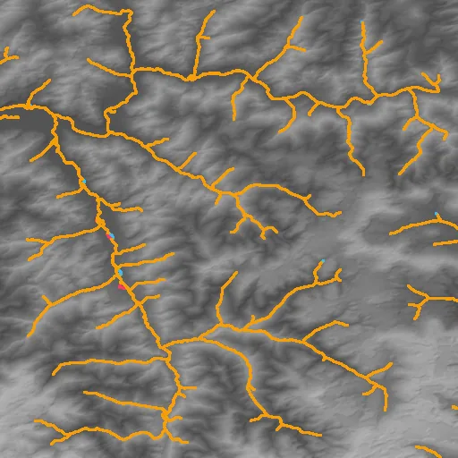
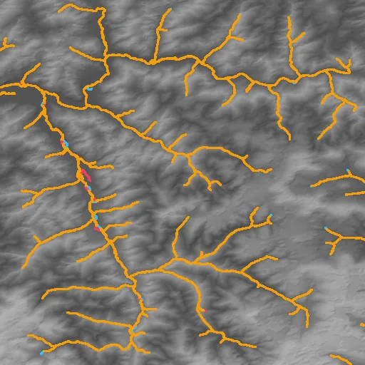
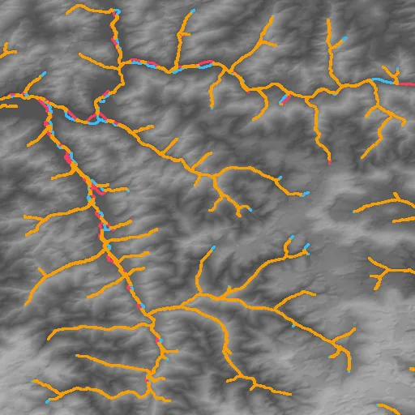
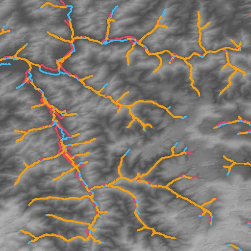
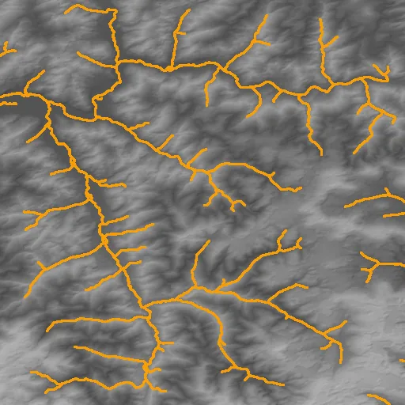
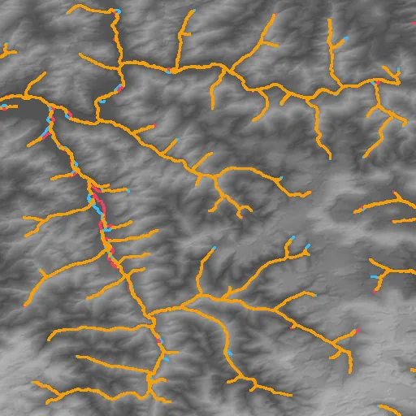
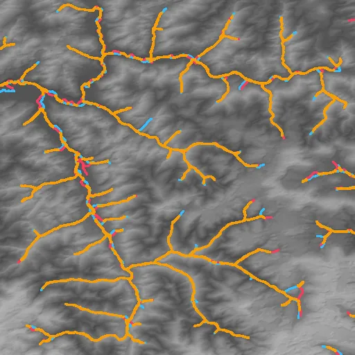

Benchmark / Use cases / Drainage networks / Results / cop-dem-glo30-11
cop-dem-glo30-11
Compression ratio and stream_f1
Each point is a bound on the root-mean-square error, written next to it in metres, on this sample.
GeoZL PIVCOGeoZL PFORJPEG XL
Decoded stream networks
The result on the compressed copy at each error bound, in metres.on both within one celllostnew
GeoZL PIVCO

RMSE ≤ 0.1 m, measured 0.0816
2.7× · stream_f1 +0.994
RMSE ≤ 0.2 m, measured 0.2
3.5× · stream_f1 +0.983RMSE ≤ 0.4 m, measured 0.374
4.3× · stream_f1 +0.972 RMSE ≤ 0.8 m, measured 0.778
RMSE ≤ 0.8 m, measured 0.778
5.8× · stream_f1 +0.937
RMSE ≤ 1.6 m, measured 1.59
8.1× · stream_f1 +0.899RMSE ≤ 3.2 m, measured 3.14
11.9× · stream_f1 +0.842
RMSE ≤ 6.4 m, measured 6.38
15.7× · stream_f1 +0.736GeoZL PFOR
JPEG XL

RMSE ≤ 0.1 m, lossless
2.4× · stream_f1 +1.000 RMSE ≤ 0.2 m, lossless
RMSE ≤ 0.2 m, lossless
2.4× · stream_f1 +1.000 RMSE ≤ 0.4 m, lossless
RMSE ≤ 0.4 m, lossless
2.4× · stream_f1 +1.000 RMSE ≤ 0.8 m, lossless
RMSE ≤ 0.8 m, lossless
2.4× · stream_f1 +1.000RMSE ≤ 1.6 m, measured 1.55
12.5× · stream_f1 +0.963
RMSE ≤ 3.2 m, measured 3.19
39.9× · stream_f1 +0.941
RMSE ≤ 6.4 m, measured 6.36
98.3× · stream_f1 +0.853